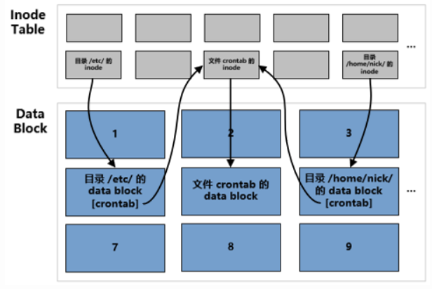
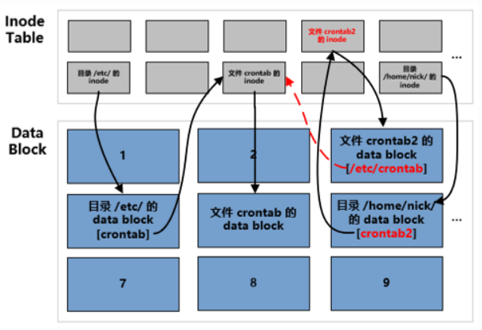

链接和软连接的区别
🏑软硬链接的区别
🎈what 软硬链接的定义？
Hard Link(硬链接)
每个文件对应一个 inode，文件的内容在存储在 inode 指向的 data block 中。要读取该文件的内容，需要通过文件所在的目录中记录的文件名找到文件的 inode 号，然后通过 inode 找到存储文件内容的 data block。

Symbolic Link(软链接)
简单而言，创建软链接时会创建一个新的文件(分配一个 inode 和对应的 data block)，新文件的 data block 中存储了目标文件的路径。

🏒硬链接 VS 软链接
优缺点对比
| 定义 | 优点 | 缺点 | |
|---|---|---|---|
| 硬链接 | 同一个文件起了多个名字 | 节点标号一样 = 同一个文件 几乎不占空间 “ll”命令可以显示连接数 （文件夹不能创建硬链接，但是会自动生成，一个文件夹硬链接数字一定>=2,存在“.”隐藏文件） | 不能跨分区域 不支持文件夹（会导致循环） 相对路径：自身目录 |
| 软链接 | 软/符号链接=相当于windows“快捷方式” = C语言当中的指针 | 节点标号不一致=不是同类型的文件 支持跨设备和分区 文件类型：与源文件无关 | 相对路径：引用时，写入相对于“软链接”路径，而不是“原文件”路径 |
从九个维度区别软硬链接的不同
- 本质
- 硬链接：与原文件是同一个文件
- 软连接：与源文件文件类型不同
- 跨设备
- 硬链接：不支持
- 软连接：支持
- inode
- 硬链接：相同
- 软连接：不同
- 连接数
- 硬链接：增删硬链接，连接数会随之增删
- 软连接：创建和删除，不影响链接数量
- 文件夹
- 硬链接：不支持
- 软连接：支持
- 相对路径
- 硬链接：路径相对于当前工作目录
- 软连接：原始文件的相对路径是相对于链接文件的相对路径
- 删除源文件
- 硬链接：连接数减少，但是不影响链接文件访问
- 软连接：链接文件无法访问
- 文件类型
- 硬链接：和源文件相同
- 软连接：与源文件不同
- 文件大小
- 硬链接：与源文件相同
- 软连接：与源文件不同
简单理解，软连接的诞生更像是未了弥补硬链接如不能跨平台和分区等却点，但是软连接也存在占用内存空间等一些缺点。
本博客所有文章除特别声明外，均采用 CC BY-SA 4.0 协议 ，转载请注明出处！